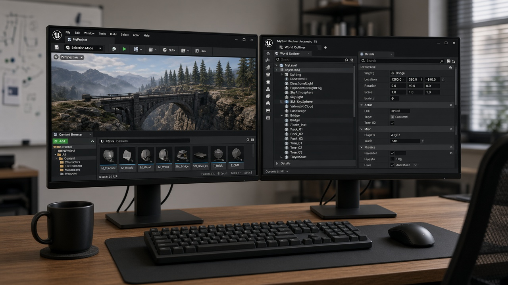

Desenvolvimento de Projetos Gameficados
Prototipagem, sistemas de gameplay, integração Unreal e pipelines de conteúdo para experiências jogáveis com foco em performance e clareza de direção.
A Skadi Studio é um Estúdio de desenvolvimento e conteúdos interativos para entusiastas, marcas e produtores que desejam criar experiências inesquecíveis
Design, Tecnologia e Human Craft — do brief ao build, experiência de impacto
Serviços
Prototipagem, sistemas de gameplay, integração Unreal e pipelines de conteúdo para experiências jogáveis com foco em performance e clareza de direção.
Trailers, showcases, motion e peças narrativas para lançamentos, portfólio e comunicação de produto — alinhadas à identidade do projeto.
Apresentamos dois projetos de geração de conteudo para desenvolvedores e empresarios. O projeto de Podcast Cyber Design busca trazer uma pauta reflexiva sobre novas tecnologias e seus impactos no mercado brasileiro. O Segundo projeto é o Memory X, um conjunto de videos e apostilas apresentando novos processos de desenvolvimento na area do design e da tecnologia. Em Memory X apresentamos conceitos da Coordenação entre arte, engenharia e narrativas para manter escopo, ritmo e qualidade técnica de projetos.
Método
Menos camadas, mais decisão. Trabalhamos com ciclos curtos, referências objetivas e entregáveis que o time consegue usar no dia seguinte.
Seleção


Podcast
Cyber Design é o podcast da Skadi Studio criado para despertar reflexões sobre as novas tecnologias do dia a dia e seus impactos na sociedade.
A intenção é oferecer uma análise clara dos movimentos do mercado de tecnologia e design — sob diversas óticas — para que marcas e produtos permaneçam atualizados e bem informados.
Conteúdo educacional
Memory X é um conjunto de vídeos e apostilas da Skadi Studio com processos de desenvolvimento em design e tecnologia — da coordenação entre arte, engenharia e narrativa à qualidade técnica de projetos.
Materiais para download
Projetos em Desenvolvimento
Um projeto de game Single Player onde os usuários são inseridos em um vasto universo para explorar, contando com uma narrativa que mescla ficção científica e elementos icônicos da cultura brasileira.


Conte o contexto do projeto. Respondemos com escopo e próximos passos.
Fale conosco


Quem somos
Espaço para apresentar o estúdio: origem, visão e as pessoas por trás dos projetos. Substitua este texto pela descrição oficial da Skadi Studio e atualize as fotos acima.
Games, vídeo e direção de produção com o mesmo padrão de clareza técnica.